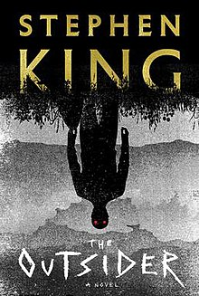

The Outsider (King novel)
The Outsider (2018) is a horror novel by the American author Stephen King. The novel was published by Scribner.
In Flint City, Oklahoma, the mutilated and raped corpse of Frankie Peterson is found. Fingerprints and DNA at the crime scene as well as witness accounts all clearly indicate local sports coach Terrence Maitland as the killer, so detective Ralph Anderson orders a public arrest.
 Next book.